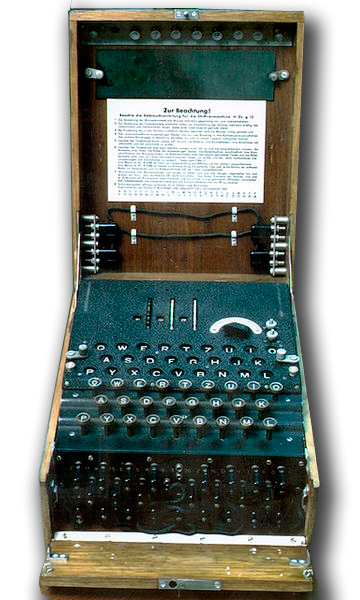

Шифр (от французского слова chiffre, букв. – цифра, от арабского – сифра – нуль), совокупность условных знаков, применяемых для секретной переписки дипломатических представителей (послов, атташе и др.) со своими правительствами, а также в вооруженных силах для передачи приказов, распоряжений, донесений. Шифрование производится путем замены целых фраз, слов, слогов или буквами в различных комбинациях на основе заранее принятой системы, являющейся соответственно ключом для расшифровки текста. Применяется также двойной шифр, требующий двойной расшифровки при помощи двух ключей. Шифр не всегда гарантирует абсолютную тайну секретной переписки, т.к. даже к очень сложным шифрам может быть подобран ключ путем расчетов, вычислений повторяемости отдельных знаков и т.п.